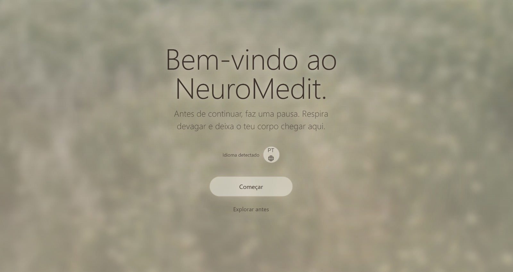
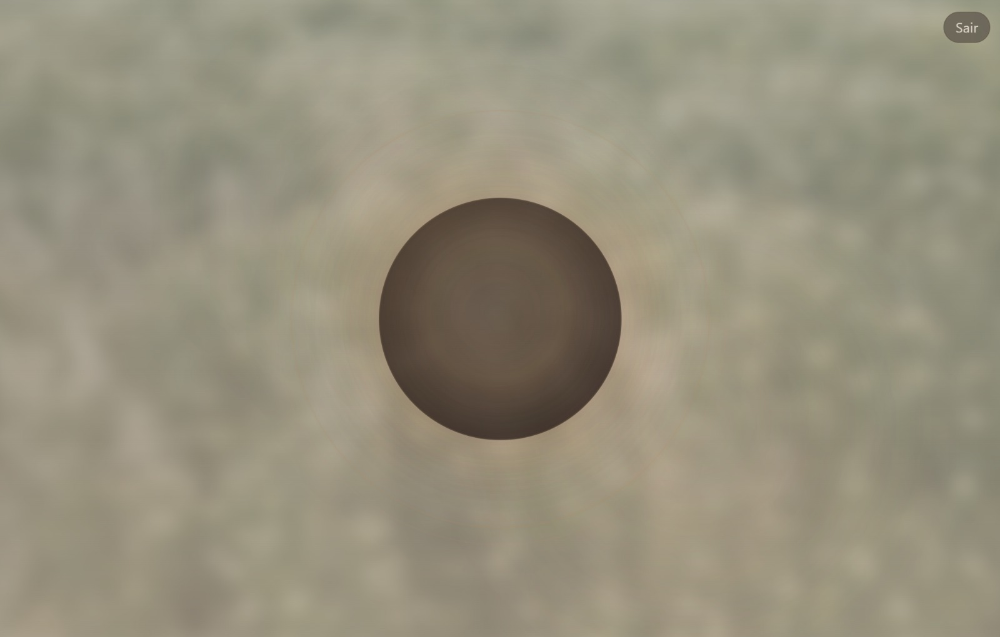

01 · Produto próprio · no ar
NeuroMedit
Meditação guiada com base em neurociência. Em vez de pedir escolhas a quem chega cansado, o produto começa por uma respiração.
Meu papel: pesquisa, roteiro, sistema visual e front-end, sozinho.